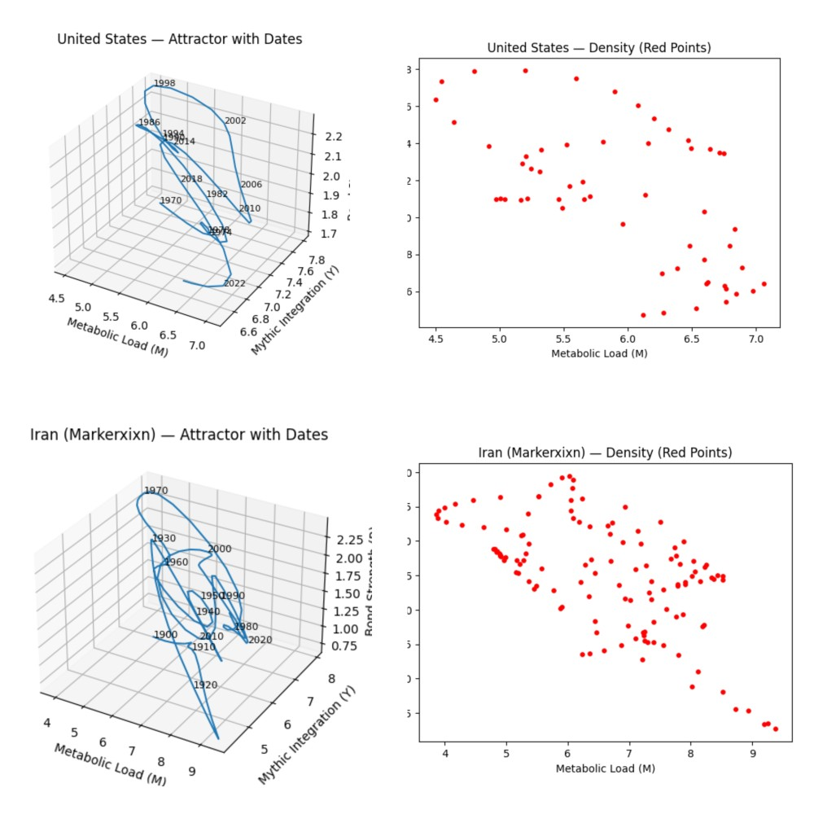
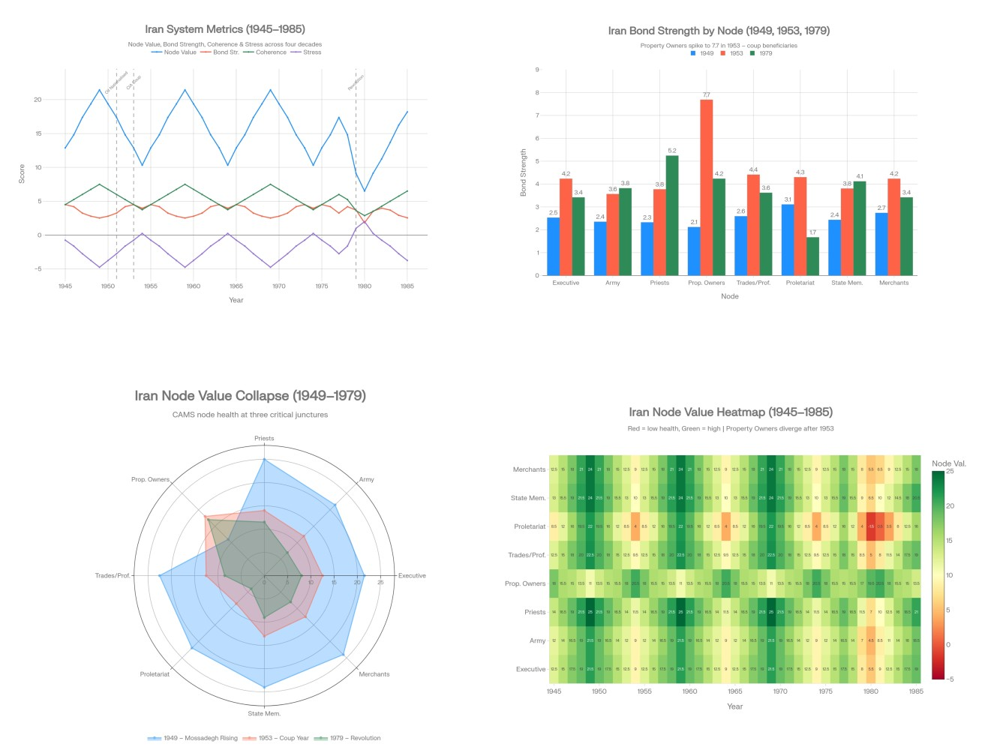

Crisis in the Middle East: A Quantitative Perspective
Sovereignty logic versus coercive leverage — two states operating under incompatible decision logics
The US–Iran confrontation is usually framed as a nuclear dispute. In reality, it is a systems conflict: sovereignty logic versus coercive leverage, shaped by a century of intervention, mistrust, and institutional adaptation.
The February 2026 talks in Muscat and Geneva may appear routine diplomacy, but structurally they reveal a deeper problem — two states operating under incompatible decision logics in a high-stress international environment.
The Trump administration is pressing for a deal that would sharply restrict Iran's nuclear programme — ideally ending uranium enrichment — while also addressing ballistic missiles, regional armed groups, and human rights. President Trump has set tight timelines, warning that failure could bring serious military consequences. The United States has expanded its regional military presence as leverage. Senior officials have expressed scepticism, calling the talks "complicated," while Vice President Vance has criticised the absence of Iran's Supreme Leader from direct participation.
Iranian officials have signalled willingness to compromise on the nuclear file if meaningful sanctions relief is delivered. Tehran insists the talks remain limited to nuclear issues and rejects negotiations over missiles or regional allies, which it defines as non-negotiable elements of national defence.
A Mode Mismatch
Viewed through the CAMS framework — which models societies as self-organising networks balancing deliberative (Ψ-mode) and reactive (Φ-mode) dynamics — the conflict reveals a mode mismatch.
Iran's willingness to trade enrichment limits for sanctions relief reflects Ψ-dominance: measured, long-horizon signalling rooted in institutional memory and civilisational endurance. US maximalist demands and oscillating rhetoric indicate Φ-overload, where domestic polarisation and strategic overreach suppress deliberative capacity.
Iran
Ψ-dominant
Long-horizon signalling. Institutional memory. Civilisational endurance. Measured trade-offs within defined red lines.
When the mode ratio (R = Φ / Ψ) approaches current thresholds (~5.0), systems become unable to process information deliberatively. Entropy is discharged through kinetic substitutes: military posturing, sanctions escalation, and rhetorical threats.
The Helm node does not choose reactivity; it is constrained by its coherence–capacity balance.
Effective negotiation requires long-horizon planning, internal alignment, and the ability to make commitments that survive domestic noise. Under current conditions, the US Helm appears thermodynamically constrained in performing these functions.

Attractor phase-space — Metabolic Load · Mythic Integration · Bond Strength. United States (top) and Iran (Markerxixn, bottom). Iran's trajectory is wider and more dispersed; the US traces a tighter loop that collapses after 2010.
Iranian Path Dependencies
Iran's geopolitical posture reflects a long historical pattern: repeated foreign intervention has produced a state structure centred on resistance, sovereignty, and strategic self-reliance.
From Anglo-Russian interference in the Qajar era to the 1953 coup, the Iran–Iraq War, decades of sanctions, and strikes on nuclear facilities, each episode reinforced a governing lesson: external powers will constrain Iranian autonomy whenever it develops strategic leverage.
This path dependency has produced a system in which ideological cohesion and security institutions outweigh commercial elites. The clerical establishment and the Revolutionary Guard derive legitimacy from defending sovereignty, while sanctions have weakened independent economic actors who might favour accommodation. External pressure therefore strengthens, rather than weakens, core institutions.
CAMS analysis shows that military pressure hardens Iranian resolve because it reinforces the very resistance narrative that underpins regime legitimacy.
Demands for full dismantlement of enrichment are perceived not as safeguards but as permanent subordination. For the United States and Israel, however, Iranian capability threatens regional freedom of action and deterrence balances. The result is structural deadlock: Iran sees scientific autonomy as sovereign necessity; its adversaries see unacceptable risk.
Path Dependency: 1953 and the Making of the Present
From a CAMS perspective, modern Iran is largely a product of external intervention.
In 1953, Mossadegh's elected government was overthrown with British and American backing after nationalising Iran's oil industry. In the short term, order appeared restored: the Shah was strengthened, Western oil interests protected, and Iran integrated into Cold War security architecture.
Three long-term consequences followed.
1953
Democratic legitimacy damagedMossadegh represented a constitutional nationalist path combining parliamentary rule with independence from foreign control. His removal signalled that electoral mandates would not override strategic interests.
1953–
Repression replaced pluralismPolitical parties, unions, and independent media were constrained or crushed. SAVAK became central to regime stability. Grievances were forced underground; civic institutions hollowed out.
1953–
Opposition consolidated around religionBy weakening secular and left-leaning forces, the post-1953 order strengthened clerical networks as the primary organised alternative. Mosques and seminaries became hubs of mobilisation.
1979
The revolutionThe Shah presided over a modernising but brittle state: rapid growth, visible inequality, and tight political control. With few lawful outlets for dissent, the crisis of 1978–79 reflected accumulated grievances over sovereignty, legitimacy, and repression. The memory of 1953 became central to the revolutionary narrative.
The 1953 coup did not merely replace one leader with another. It rewired Iran's coordination architecture: concentrating bonds around a narrow property-owning elite, stripping coherence and capacity from all popular and professional nodes, and loading chronic stress onto the proletariat.
In this sense, 1953 and 1979 are linked by path dependency. The coup narrowed political options, centralised power, and reshaped the opposition. Over time, this configuration produced a revolutionary coalition led by religious authorities rather than secular nationalists. What appeared a tactical success in 1953 contributed, a generation later, to a strategic rupture that still shapes relations between Iran and the West.

Iran 1945–1985. Top left: system metrics across four decades. Top right: bond strength by node at 1949, 1953, and 1979 — Property Owners spike to 7.7 in 1953. Bottom left: node value collapse radar at three critical junctures. Bottom right: node value heatmap (red = low health, green = high).
1953 coordination shock in the data: Property Owners bond strength spikes to 7.7 — a sharp concentration of institutional power into a narrow elite, immediately visible in the node heatmap as the post-coup years show Proletariat and Trades/Prof. nodes going red while the Executive and Priests maintain green.
Comparative Helm Dynamics
US Helm
High abstraction, declining coherence, elevated stress — decoupled governance and reactive signalling
Iran Helm
Tighter abstraction–coherence alignment under chronic pressure — grounded executive resilience
R ≈ 5.0
Mode ratio Φ/Ψ — threshold at which deliberative processing gives way to reactive entropy discharge
Under rising stress, systems face a bifurcation: increase internal order and adapt, or fragment into reactive modes. Abstraction without structural integrity accelerates decay; coherent adaptation under pressure can harden resilience.
From this perspective, modern Iran is not an anomaly but an adaptive response to sustained external constraint.
Conclusion
Reactive equilibrium signature: Recent interactions show oscillation without convergence — high signalling, low trust, and escalating entropy. This is the thermodynamic signature of a system locked in reactive equilibrium, where each pressure cycle amplifies hysteresis and increases the probability of inadvertent escalation.
Structural reading
The US–Iran confrontation is a systems conflict between incompatible decision logics — Ψ-dominant sovereignty versus Φ-overloaded coercive leverage
External pressure on Iran strengthens the very institutions it aims to weaken — the resistance narrative is load-bearing, not incidental
The 1953 coup rewired Iran's coordination architecture in ways that produced the 1979 revolution and constrain diplomacy today — path dependency is measurable in the node data
The US Helm appears thermodynamically constrained from sustained deliberative engagement — domestic polarisation and strategic overreach suppress the required coherence–capacity alignment
Any durable settlement would require credible security guarantees addressing Iran's historical fear of domination — conditions difficult to meet in a high-entropy international environment